AI Song Creation
The end-to-end flow to create an AI song on the web: compose in Simple or Custom mode, watch generation, view the result, and see the finished song appear in History.
| Platform | YouCam Muse Web (desktop) — captured at 1440px |
| Audience | QA |
| Scope | Simple compose, Custom compose, and a generation-failure path — each ending at /song/result or Generation Failed; the two happy paths close on the new row in /history. Plus three independent single-screen scenarios, each its own short path: guest sign-in gate (P4, two connected steps), insufficient credits (P5), and the Trending/My Creations side-rail swap (P6). |
| Out of scope | History’s own behavior (filters, ⋯ menu, publish, delete) — see specs/areas/05-history.md |
| Source | specs/areas/03-song-creation.md, specs/areas/05-history.md, specs/00-overview.md, and the running app |
↓ Flow Diagram — full user journey (click to expand)
Mermaid source
flowchart TD
Entry["Sidebar "AI Song""] --> Mode{Compose mode?}
Mode -->|Simple| Simple["Compose - Simple (Idea fill)"]
Mode -->|Custom| Custom["Compose - Custom (Lyrics fill)"]
Simple --> Create["Tap Create Song"]
Custom --> Create
Create --> Creating["/song/creating"]
Creating --> Outcome{Job outcome}
Outcome -->|done| Result["/song/result"]
Outcome -->|"[fail]" marker| Failed["Generation Failed"]
Result --> History["/history (Done row)"]
| ID | Path | Entry point | Steps | Outcome |
|---|---|---|---|---|
| P1 | Simple compose — happy path | Sidebar “AI Song” | 6 steps | New song row in History |
| P2 | Custom compose + Lyrics — happy path | /song/create → Custom tab | 6 steps | New song row (with Lyrics) in History |
| P3 | Generation failure | /song/create (Simple tab) | 3 steps | Generation Failed screen |
| P4 | Guest sign-in gate | Signed-out visitor taps Create Song | 2 steps | Generation starts automatically after sign-in |
| P5 | Insufficient credits | Signed-in user, balance below the generation cost | 1 steps | Buy-credits IAP opens instead of generating |
| P6 | Trending Songs vs My Creations | Signed-in user with ≥1 completed song revisits /song/create | 1 steps | Side rail shows My Creations |
Default tab. A one-line description is enough to generate.
- P1-S1 Arrives at /song/create.
- P1-S2 Taps Idea.
- P1-S3 Taps Create Song.
- P1-S4 Waits for generation to finish.
- P1-S5 Generation finishes.
- P1-S6 Opens History from the sidebar.
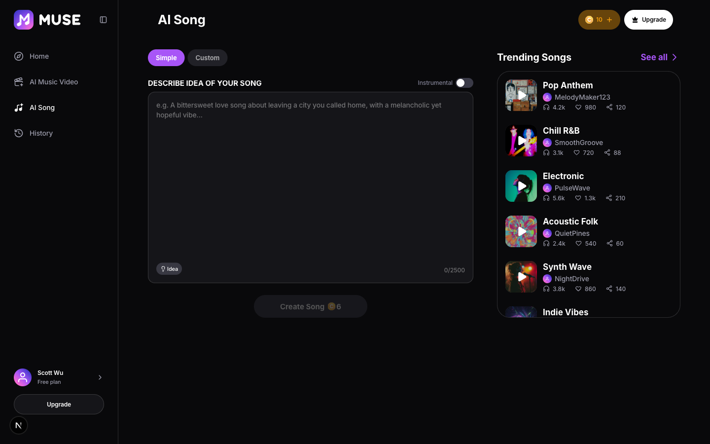
- Section label: “DESCRIBE IDEA OF YOUR SONG”
- Placeholder: “e.g. A bittersweet love song about leaving a city you called home, with a melancholic yet hopeful vibe...”
- Disabled button: “Create Song 6”
- Create Song stays disabled while Describe is empty.
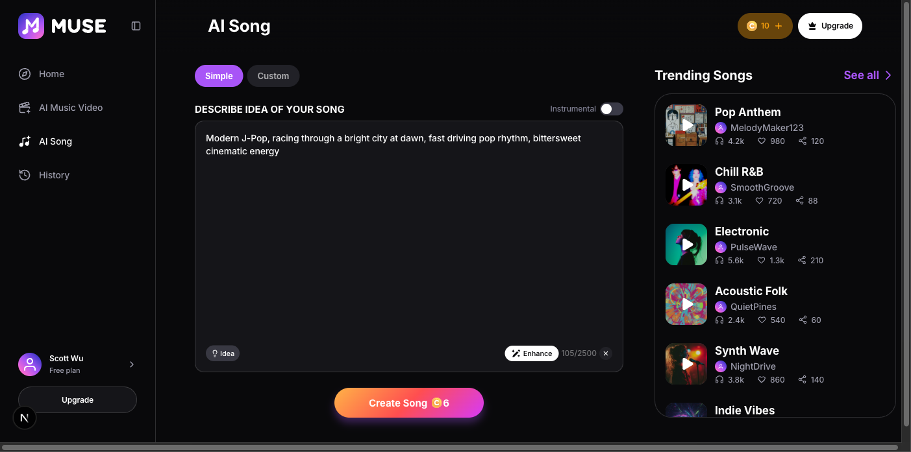
- 1Idea
- Enabled button: “Create Song 6”
- Idea fills from a fixed content pool (T1), not an AI generation on tap.A pool of 12 style+scene+tempo+mood briefs, the product owner’s own copy.
- Each tap excludes only the brief already shown, then picks uniformly from the rest.11 of 12 briefs are eligible, so the same one can reappear later — just never twice in a row.
- The Create Song cost shown is live and scales with Instrumental.Exact amounts come from the Credit Consume MSR (References), not asserted here.
- 1Create Song
- Charges on start and refunds on failure (AC-SONG-09).Exact amounts come from the Credit Consume MSR (References), not asserted here.
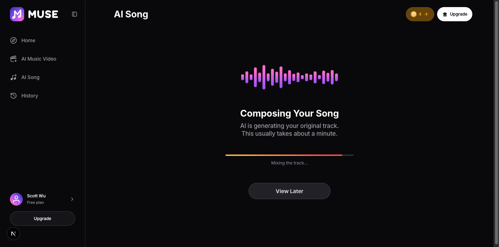
- Estimate: “This usually takes about a minute.”
- Link: “View Later” → /history.
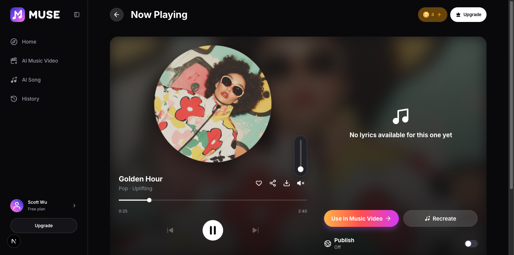
- Genre · mood line format: “Pop · Uplifting”
- Empty-lyrics note: “No lyrics available for this one yet”
- Publish state label: “Off”
- Simple mode never sets lyrics, so the result has only this fallback note, never a Lyrics panel.
- Previous/Next stay disabled until more than one song exists in My Creations.
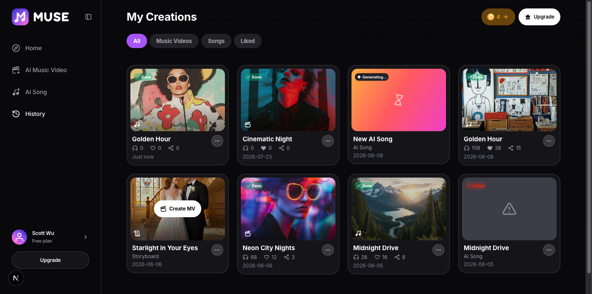
- Status pill: “Done”
- New rows are prepended to the list — most recent first.
Custom tab with a full lyric sheet, producing a synced Lyrics panel on the result.
- P2-S1 Switches to the Custom tab.
- P2-S2 Taps the Lyrics sample-fill button.
- P2-S3 Taps Create Song.
- P2-S4 Waits for generation to finish (same screen as P1-S4).
- P2-S5 Generation finishes.
- P2-S6 Opens History from the sidebar.
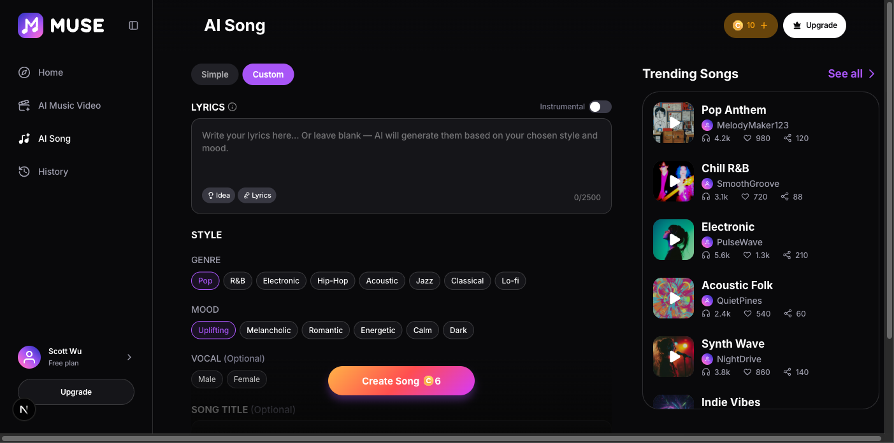
- 1Custom tab
- Section label: “LYRICS”
- Placeholder: “Write your lyrics here... Or leave blank — AI will generate them based on your chosen style and mood.”
- Chip groups: “GENRE”, “MOOD”, “VOCAL (Optional)”
- Default selected chips: “Pop”, “Uplifting”
- Field label: “SONG TITLE (Optional)”
- Custom mode’s Create Song is enabled by default (AC-SONG-01).
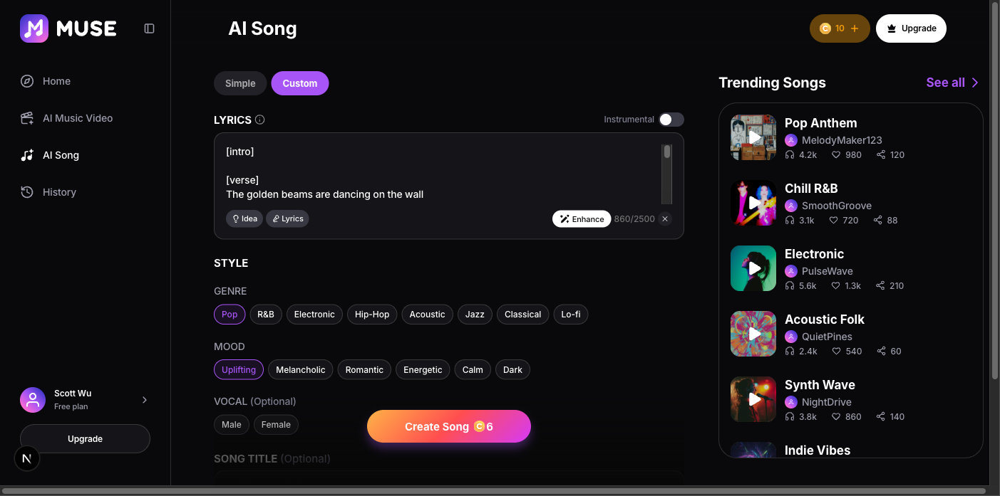
- 1Lyrics
- Sample-fill buttons: “Idea”, “Lyrics”
- Lyrics fills from a fixed content pool (T1), not an AI generation on tap.10 complete lyric sheets (one Japanese), the product owner’s own copy.
- Each tap excludes only the sheet already shown, then picks uniformly from the rest.9 of 10 sheets are eligible, so the same one can reappear later — just never twice in a row (AC-SONG-02b).
- Lyrics is hidden while Instrumental is on; Idea stays visible either way.
- 1Create Song
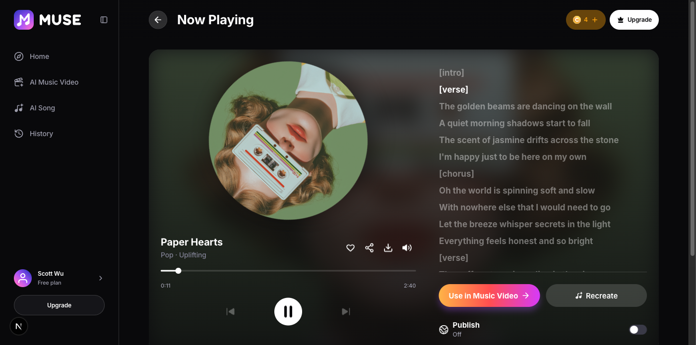
- Genre · mood line format: “Pop · Uplifting”
- Custom mode plus typed lyrics is what produces the Lyrics panel — Simple mode never does (P1-S5).
- Section markers ([intro], [verse], [chorus], [bridge], [outro]) render as their own lines, same as typed.
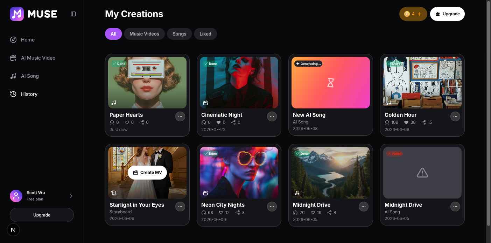
- Status pill: “Done”
- Same list behavior as the Simple path (P1-S6).
A QA hook forces a mid-generation failure so the error state can be checked without waiting on a real backend failure.
- P3-S1 Types a description containing the “[fail]” marker.
- P3-S2 Taps Create Song.
- P3-E3 The job fails at about 60% progress.
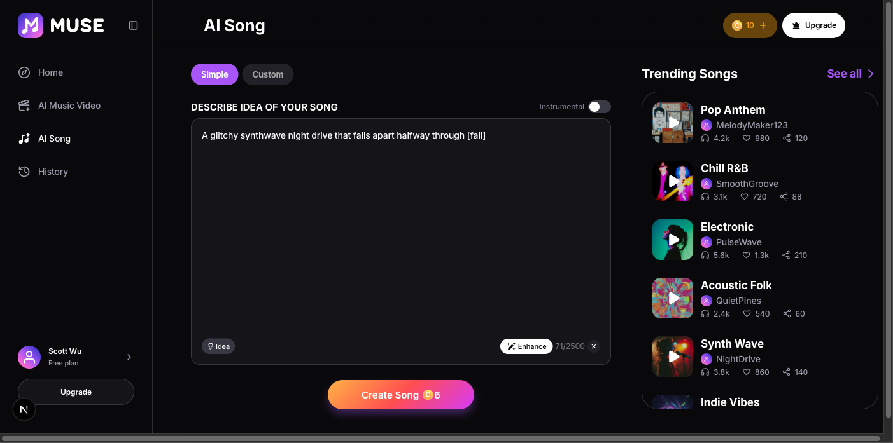
- Any Simple description containing “[fail]” triggers a mock failure at about 60% progress — a QA hook, not user-facing copy.
- 1Create Song
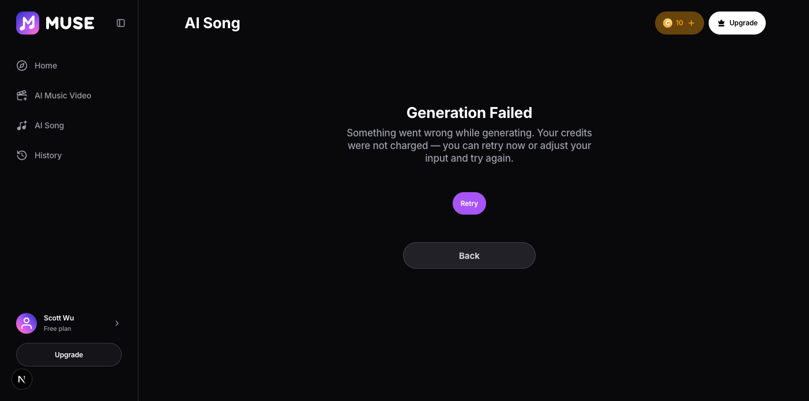
- Heading: “Generation Failed”
- Body: “Something went wrong while generating. Your credits were not charged — you can retry now or adjust your input and try again.”
- Buttons: “Retry”, “Back”
- Back returns to /song/create.
- Retry re-runs generation from the same compose state.
- The charged balance is refunded in full on failure (AC-SONG-09).The screenshot shows the balance back at its pre-charge value, matching the on-screen “credits were not charged” message.
A signed-out visitor tries to generate; two steps, one continuous flow.
- P4-S1 A signed-out visitor types a description and taps Create Song.
- P4-S2 Taps a sign-in provider (Apple or Google — both are mocked, no real OAuth).
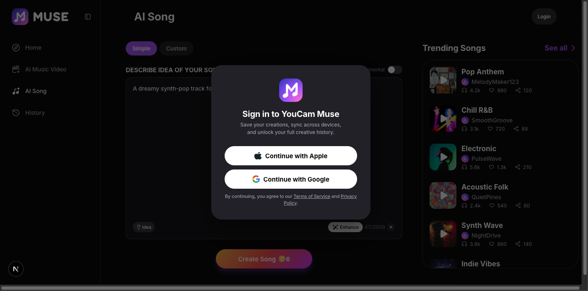
- Title: “Sign in to YouCam Muse”
- Subtitle: “Save your creations, sync across devices, and unlock your full creative history.”
- Buttons: “Continue with Apple”, “Continue with Google”
- /song/create has no route guard — the page renders for guests; the gate is on Create Song itself (AC-SONG-01b).
- Dismissing the modal (backdrop or Escape) leaves the draft intact with no navigation.
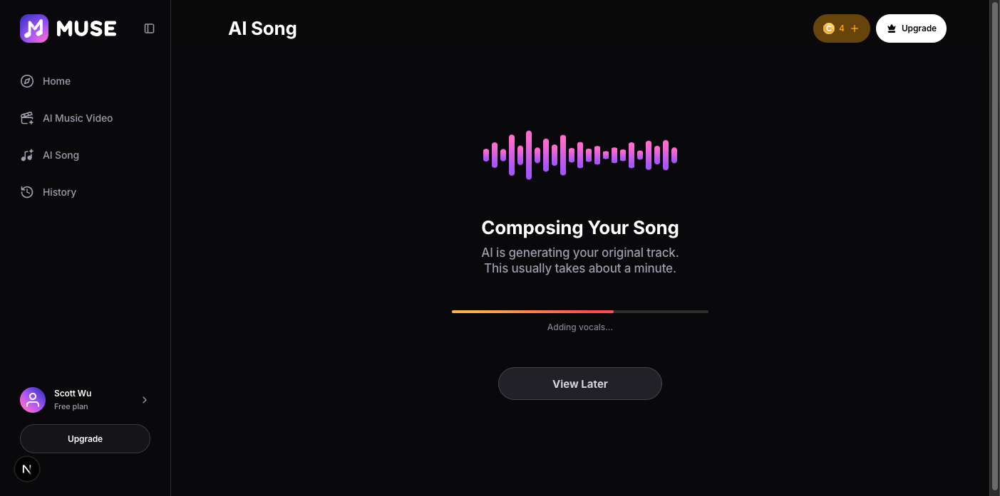
- The guest never returns to the compose screen after signing in.Signing in resumes the exact action that opened the modal — here, Create Song.
- The insufficient-credit check (P5-S1) runs only after sign-in resumes the action, never while still signed out (AC-SONG-01b).A guest is never shown the buy-credits upsell for an account they don’t have yet.
One independent screen — not a continuation of P4.
- P5-S1 A signed-in user with a balance below the generation cost taps Create Song (shown here: Instrumental on, raising the cost above the balance).
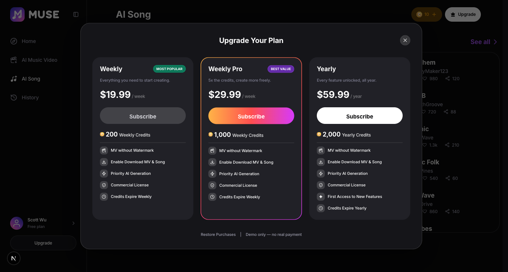
- Title: “Upgrade Your Plan”
- Footer: “Demo only — no real payment”
- Insufficient credits opens the subscription plan picker for a non-subscriber, not a credit-pack purchase.Credit packs are subscriber-only.
- The balance/cost threshold that triggers this gate is not asserted here.Exact numbers come from the Credit Consume MSR (References).
One independent screen — not a continuation of P4 or P5.
- P6-S1 A signed-in user with at least one completed song revisits /song/create.
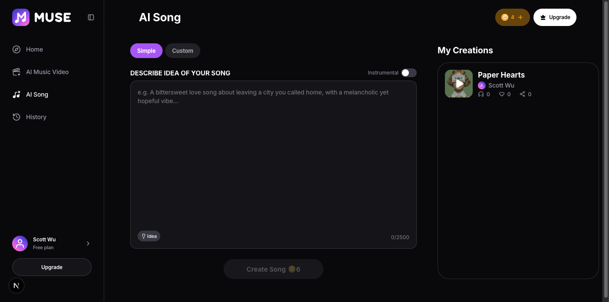
- Section label: “My Creations”
- The swap needs BOTH conditions — signed in AND at least one completed song; either alone still shows Trending Songs.
- My Creations drops the “See all” link that Trending Songs has; each row opens that song’s own result page instead.
Static content pools behind the Idea and Lyrics sample-fill buttons on /song/create (P1-S2, P2-S2). Not a runtime API payload — a TypeScript module RD ships as real content, not a fixture.
{
"SONG_IDEA_PROMPTS": [
"Dark R&B Rock, wandering through a foggy neon alley, slow tense pulse, eerie cinematic intensity",
"... 12 entries total"
],
"LYRIC_PRESETS": [
"[intro]\n\n[verse]\nFrost climbs the window pane\n...",
"... 10 entries total, one in Japanese"
]
}SONG_IDEA_PROMPTSstring[12]LYRIC_PRESETSstring[10]The product owner’s own copy, transcribed verbatim from two CSVs (2026-08-24). Do not reword, mock, or fold into `ENHANCE_SAMPLES` — that array is a different feature’s fixture. Selection is uniform-random over the pool minus only the value already shown (P1-S2, P2-S2) — not a no-repeats guarantee across a whole session.
The contract of each screen state. The flow diagram shows the transitions; this shows what each state must render.
| State | Entry condition | Visible / enabled | Transitions | Exit |
|---|---|---|---|---|
| EMPTY (Simple) | Arrive /song/create, Simple tab | Describe empty, Create Song disabled | → READY on non-empty Describe | On Create Song |
| READY | Describe non-empty (Simple) or Custom tab (always) | Create Song enabled, shows live cost | → GENERATING on Create Song tap | On Create Song |
| GENERATING | /song/creating after Create Song | Progress ring, step label, estimate, View Later | → RESULT on done · → FAILED on mock failure | On job outcome |
| RESULT | /song/result after a successful job | Player, transport, Like/Share/Download, Publish toggle, My Creations rail; Lyrics panel only when lyrics exist | → GENERATING via Recreate · → History via Back | On navigation away |
| FAILED | /song/creating after a mock failure | Generation Failed message, Retry, Back | → GENERATING via Retry · → EMPTY/READY via Back | On Retry or Back |
| Side rail: Trending Songs | Default — signed out, or signed in with zero completed songs | TOP_PICKS_SONGS with a “See all” link (P6-S1) | → My Creations once both conditions below are met | — |
| Side rail: My Creations | Signed in AND ≥1 completed song | The user’s own finished songs, no “See all” (P6-S1) | → Trending Songs on sign-out (no completed songs is not reachable once one exists) | — |
Every acceptance criterion in plan.md and where this spec defines it — 12 of 12 map to a step. Write the test cases in your test tool; this table is the trace back to the spec.
| Criterion | What it asserts | Specified in |
|---|---|---|
| AC-SONG-01 | Simple defaults with Create Song disabled until Describe is non-empty; Custom is enabled by default. | P1-S1 · P2-S1 |
| AC-SONG-02b | Idea/Lyrics sample fills never repeat the value already in the box; Idea stays available under Instrumental, Lyrics does not. | P1-S2 · P2-S2 |
| AC-SONG-04 | Create Song resets flow state and navigates to /song/creating. | P1-S3 · P2-S3 |
| AC-SONG-05 | While processing: progress, step, estimate, View Later; on done, navigate to /song/result. | P1-S4 · P1-S5 · P2-S4 · P2-S5 |
| AC-SONG-06 | /song/result exposes drag-to-seek, transport, Share, Download, a Lyrics panel when lyrics exist, Publish, Use in Music Video, and Recreate; uncapped playback. | P1-S5 · P2-S5 |
| AC-SONG-08 | A failed job shows the shared error state with Back and Retry. | P3-E3 |
| AC-SONG-09 | A song job charges its cost on start and refunds it on failure. | P1-S3 · P3-E3 |
| AC-HIST-01 | History shows live jobs prepended to the seed list under All. | P1-S6 · P2-S6 |
| AC-HIST-03 | A done row shows a Done status pill. | P1-S6 · P2-S6 |
| AC-SONG-01b | Logged-out users see the full compose screen with no sign-in modal; the modal opens only on Create Song, and the insufficient-credit upsell never shows to a guest. | P4-S1 · P4-S2 |
| GL-01 | When credits are below the generation cost, the CTA routes to the buy-credits IAP instead of starting generation. | P5-S1 |
| SONG-P1-S0 | The compose side rail shows Trending Songs by default, swapping to My Creations once the user is signed in with at least one completed song. | P6-S1 |
| Error | Trigger | Message shown to user | Recovery | Refund? |
|---|---|---|---|---|
| Song generation fails | Simple-mode description contains “[fail]” — the QA hook for a mid-generation failure | “Generation Failed — “Something went wrong while generating. Your credits were not charged — you can retry now or adjust your input and try again.”” | Retry re-runs the job from the same compose state; Back returns to /song/create. | Yes, in full (AC-SONG-09) — the balance returns to its pre-charge value. |
| Signed-out user taps Create Song | Any compose state, no active session (P4-S1) | “Sign-in modal opens over the compose screen; no credits upsell is shown” | Sign in (P4-S2) resumes the original action automatically; dismissing the modal leaves the draft intact with no navigation | N/A — never charged, gated before generation starts |
| Balance below the generation cost | Signed in, credits < cost at Create Song — e.g. Instrumental raises the cost above the balance (P5-S1) | “Buy-credits IAP opens (a subscription picker for a non-subscriber) instead of starting generation” | Close the IAP and lower the cost (turn off Instrumental) or top up, then retry | N/A — never charged, gated before generation starts |
Production trigger for a real generation failure is undefined — the “[fail]” marker is a mock-only QA hook (TBD-SONG-06, specs/areas/03-song-creation.md §8).
Where the prototype fakes or stubs behaviour. Build the production must do column — never the prototype behaviour.
| Area | Prototype does | Production must do |
|---|---|---|
| Generation timing | The mock always resolves in a few seconds of wall-clock time, regardless of the on-screen “~1 minute” estimate. | Real generation duration is backend-determined; the on-screen estimate must reflect the actual expected wait or be removed. |
| Credit balance persistence | The balance is in-memory and resets to its demo default on every full page load, so a reload restores spent credits. | A real balance is server-held: it must survive a reload, and the charge must be atomic with the generation request rather than applied client-side before it. |
| ID | Question | Decision |
|---|---|---|
| D-01 | What source replaces prd.md/plan.md for this repo? | specs/areas/03-song-creation.md and 05-history.md (the existing as-built specs) plus direct verification against the running app. |
| D-02 | Where does the Song Creation storyboard stop relative to History? | One closing step per happy path showing the new row in History; History’s own filters/menu/publish/delete stay out of scope (05-history.md already covers them). |
| D-03 | Comments layer for this trial? | Disabled — no Firebase backend exists in this repo yet. |
| D-04 | Show the guest sign-in gate, after the trial initially started every path already logged in? | Reversed on review feedback (2026-08-24) — added as P4/P5/P6, each single-screen or a short 2-step flow rather than a full connected path like P1–P3. |
| D-06 | Extra P4 steps, or separate paths, for insufficient credits and the side-rail swap? | Split into P5 (insufficient credits) and P6 (side-rail swap) on review feedback (2026-08-24) — only P4’s own two steps are a connected flow; P5 and P6 are independent screens, and numbering them as further P4 steps read as if they were part of the guest flow. |
| D-07 | The negative credit balance visible in the first round of screenshots — capture artifact, or defect? | A real defect, fixed 2026-08-25. The generation-start effect charged credits with no idempotency guard, so React Strict Mode’s deliberate double-invoke billed every generation twice (a 10-credit balance went to −2 for one 6-credit song, and a failed job refunded only half of what it took). Both generation screens now guard the effect with a ref. Re-verified against the running app: one generation deducts one charge, and a failure returns the balance to its pre-charge value. All screenshots were recaptured. |
| D-05 | Where do credit-cost numbers come from in this spec? | Nowhere — every RULES bullet that used to assert a number (6/12 credits) now points at the Credit Consume MSR instead (see References). Verbatim on-screen text like “Create Song 6” is unaffected, since that is a true fact about the current build regardless of what the MSR prices it at. |
| Item | Link | Owner |
|---|---|---|
| Credit Consume MSR — generation cost numbers | — | TBD |
| AI Song Ideas & Lyrics preset content (T1) | src/lib/mv/songIdeas.ts | Product owner |